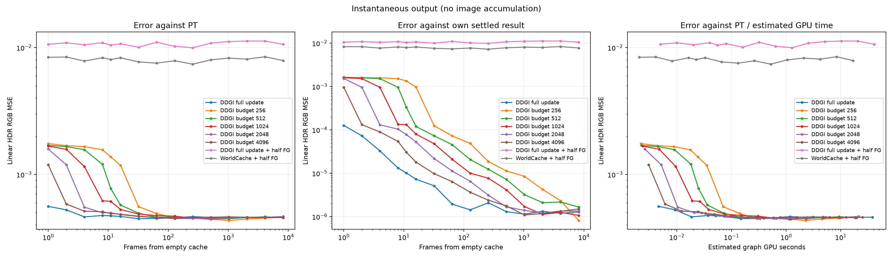
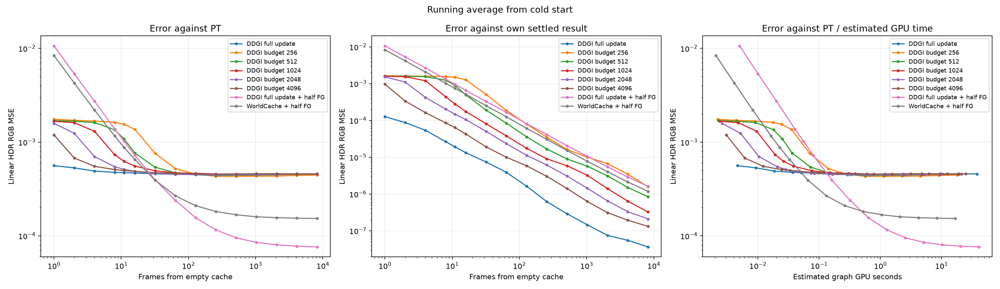
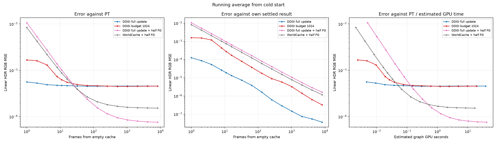
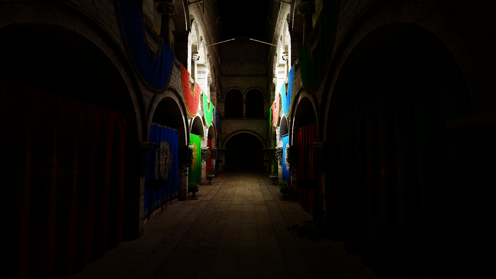
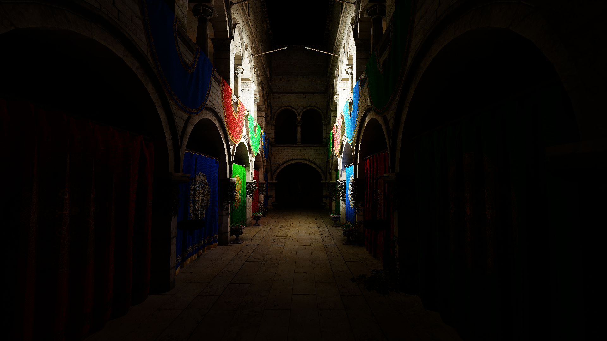
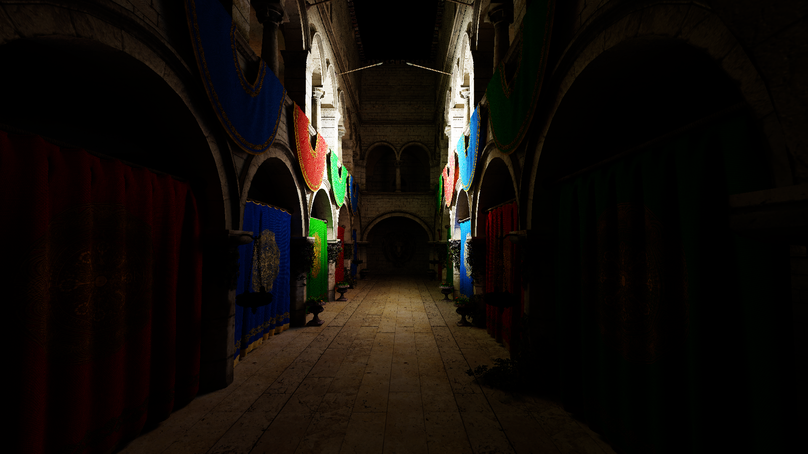
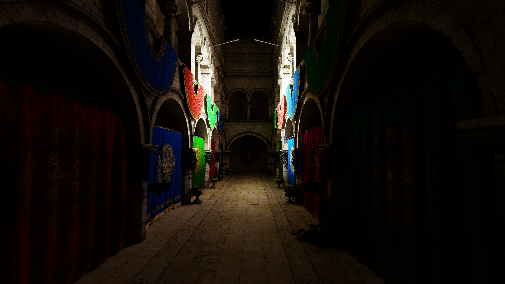

1920×1080，SponzaLambert，固定相机与点光源，方向光关闭。DDGI 初始规则网格与 NVIDIA RTXGI-DDGI 1.3.7 Test Harness 的 sponza.ini 一致：22³=10648 个探针，中心 (-0.4,5.4,-0.25)，间距 (1.02,0.5,0.45)，256 rays/probe，hysteresis 0.97，开启 relocation/classification。运行后的探针偏移与状态由各自更新历史决定，不保证逐帧相同。
DDGI 六档预算按索引轮换，尾批不足预算时不跨轮，平均更新数=10648/轮换帧数。预算包含 inactive 探针；inactive 仅追踪 32 条固定射线。冷启动历史权重按完整轮次增长。
WorldCache 指本项目迁移的 LumenWorldCache 路径，不代表完整 UE Lumen。它没有 DDGI 探针：每帧按屏幕 8×8 下采样生成更新路径（240×135 个起点），最多 3 跳，1048576 个哈希条目，history 16，density 20，最小 cell 0.025。它采用半分辨率 FG，并补充全量 DDGI＋半分辨率 FG 对照；这两条与直接 probe 插值并非同等射线预算。ReSTIR、NRD、useWRC 均关闭，半分辨率采样位置固定。
各组缓存均清空后运行 8192 帧；曲线分别记录瞬时画面与从第 1 帧开始的 Accumulate 平均。随后重置 Accumulate，原生 DDGI 另累积 4096 帧、两条 FG 路径另累积 32768 帧得到稳定图，并记录各自最后一次翻倍的变化，数据见 summary.json。FG 的瞬时曲线存在 1 spp 噪声底，不能将其不下降解释为缓存不收敛。冷启动平均会保留早期偏暗帧，反映实际启动后的累积过程。
参考复用相同场景/相机/灯光的 131072 spp 未降噪 PT。MSE 使用可见表面 mask 内线性 HDR RGB；HDR-FLIP 使用共同曝光范围、ACES、PPD 67。GPU 测量禁用辅助 ColdAverage，统计稳定期 840 帧平均，包含 GBuffer、GI、重建（如有）、Accumulate、显示和辅助 ColdAverage 禁用后的输出复制（单独耗时保存在 JSON）；横轴 GPU 秒为帧数×稳定期均值的估算，不含编译及文件写入，也不是冷启动实际计时。
| 方案 | 预算 | 轮换帧数 | MSE 对 PT ↓ | HDR-FLIP ↓ | 缓存更新 ms | 整图 ms | 瞬时自身误差<1e-5 帧数 | 累积自身误差<1e-5 帧数 |
|---|---|---|---|---|---|---|---|---|
| DDGI full update | 10648 | 1 | 0.000458043 | 0.5744 | 2.604 | 4.640 | 16 | 32 |
| DDGI budget 256 | 256 | 42 | 0.000458277 | 0.5738 | 0.165 | 2.195 | 1024 | 2048 |
| DDGI budget 512 | 512 | 21 | 0.000459233 | 0.5748 | 0.236 | 2.259 | 512 | 512 |
| DDGI budget 1024 | 1024 | 11 | 0.000457459 | 0.5749 | 0.356 | 2.378 | 256 | 256 |
| DDGI budget 2048 | 2048 | 6 | 0.000457534 | 0.5745 | 0.564 | 2.584 | 128 | 256 |
| DDGI budget 4096 | 4096 | 3 | 0.000458899 | 0.5742 | 1.004 | 3.030 | 32 | 64 |
| DDGI full update + half FG | 10648 | 1 | 7.52902e-05 | 0.3063 | 2.583 | 5.000 | 未达到 | 2048 |
| WorldCache + half FG | 不适用 | 不适用 | 0.000152457 | 0.1528 | 0.265 | 2.050 | 未达到 | 1024 |
阈值帧数指从该检查点开始，所有后续检查点相对各自稳定图的瞬时 MSE 均小于 1e-5；这是本实验的比较口径，不是通用收敛标准。各自稳定图不同，所以该列不能替代相对 PT 的质量判断。本次只有静态场景，没有测动态灯光响应；每档仅测一条随机序列，细微数值差异不表示算法优势。
六档原生 DDGI 最终 MSE 为 0.0004575～0.0004592，静态目标画质接近，主要差别是启动速度和更新耗时。256 档只比 1024 档节省 0.18 ms 整图时间，但缓存收敛明显更慢，说明进一步压低预算有收益递减。
WorldCache＋半分辨率 FG 整图约 2.05 ms，全量 DDGI＋半分辨率 FG 约 5.00 ms。本次 WorldCache 的 HDR-FLIP 更低，而 DDGI＋FG 的线性 HDR MSE 更低；误差分布不同，不能用单一分数宣称全面优胜。FG 的瞬时曲线被蒙特卡洛噪声主导，比较其可见收敛应看下方累积曲线。辅助 ColdAverage 禁用后的复制成本约 0.09 ms，已包含在整图值中。






